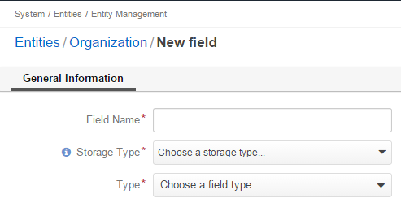

Fields are used to collect details of entity records.
For example, a ‘street name’, a ‘zip code’, and a ‘building number’ may be fields of an ‘address.’
You can add new fields to any custom entity or an extendible system entity.
This guide describes how to create and modify the fields.
In the main menu, navigate System>Entities>Entities Management.
On the All Entities page, click the required entity in the grid.
On the entity view page, click the Create Field button in the upper-right corner of the page.
Specify information for the basic entity field properties. See the descriptions of the basic properties in the Basic Entity Field Properties section.
Click Continue button. Depending on what has been selected for Type, the corresponding additional fields appear.
Specify information for additional properties. See the descriptions of the basic properties in the Advanced Entity Field Properties section.
Click Save in the upper-right corner of the page.
After that, you may require to update the schema. For how to do it, see the Update Schema section.
In the main menu, navigate System>Entities>Entities Management.
On the All Entities page, click the required entity in the grid.
On the entity view page, click Fields.
In the grid of the Fields section, click the required field.
Make the required changes according to the description provided in step 6 of the Create a Custom Entity Field section.
Important
The list of properties editable for system entity fields depends on configuration and is created in a way reasonable and safe for the system performance and operation.
Click Save in the upper-right corner of the page.
After that, you may require to update the schema. For how to do it, see the Update Schema section.
Alternatively, you can start editing an entity field from the entity view page by clicking the Edit icon at the right end of the corresponding row.
For the detailed description of entity field types, see the Entity Field Types guide.
For the overview of the entities, see the Entities guide.